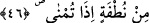
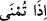
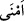
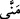
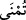
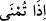

45. Şurası muhakkak ki erkek ve dişiden ibaret olan iki çifti O yarattı.
“Şurası muhakkak ki erkek ve dişiden ibaret olan iki çifti” erkek ve dişi sınıflarını
“O yarattı.”
Bazı tefsirlerde “Her canlıdan iki çifti yarattı” şeklinde geçmekte ve şöyle
denilmektedir: “Her canlı nutfeden yaratılmamıştır. Bilakis bazıları, mesela kuşlar
rüzgârdan yaratılmıştır. Zira kendisinden tavuğun yaratıldığı yumurta horozun
rüzgârından yaratılmıştır.
46. (Rahime) atıldığında nutfeden,
Nutfe saf bir sudur ki Müfredat’ta bu kelimenin erkeğe âid olan su/menî olduğu ifâde
edilir. (
) menî rahme fışkırtıldığı ve akıtıldığı zaman demektir. Âdem, Havvâ ve
İsâ (a.s.) bundan müstesnâdırlar.
Allah Teâlâ bu kelimeyle ilgili olarak “Akıttığınız meniyi gördünüz mü?” (el-Vâkıa
56/58) buyurmaktadır. Kâmûs’ta (
), (
) ve (
) hepsi aynı anlamdadır. Âyetteki (
) kelimesinin Allah Teâlâ’nın kendisinden çocuk takdir ettiği zamanki nutfeden “O,
iki çifti yarattı” anlamında olabileceği beyân edilmektedir. Zira her menîden çocuk
hâsıl olmaz.
Âyetin işârî anlamı şudur: Allah Teâlâ rûhu müzekker ve fâil olarak; nefsi de
zevceliğe uygun dişi bir şekilde yaratmıştır. Bunu ezelî irâde rahminde karar kılmış bir
halde vâki bulunan nutfeden dünyevî ve uhrevî taleplerin hâsıl olması için yapmıştır. O
da ruh ve nefisten kalple ilgili doğru ve uygun neticeyi elde etmek içindir.
(
) den murad; “harekete geçirildiği ve kadim irâde rahmine fışkırtıldığı zaman”
veya “hikmet-i baliğa ile el-Mukaddir tarafından takdir edildiği zaman” anlamındadır.
Fakir [Bursevî] der ki: Âyette “zeker” kelimesi, fâsılaya ve zekerin rütbesinin daha
şerefli olduğuna riâyet etmek için “ünsâ”dan önce zikredilmiştir. Her ne kadar
yaratmada asıl olan dişiden yaratılması ise de bu böyledir. Ancak bu şeref, bazen
kadınlarda üstün ve zâhir olabilmekte ve bu da büyük insanların muhabbetini kazanmaya
sebep olabilmektedir. İşte bu sebeple Musa (a.s.) on yıl boyunca hanımının mehri için
ona bizzat hizmet etmiştir. Hattâ dünyanın en büyük kralları cimâ esnasında hanımlarına
secde eder bir vaziyet almaktadırlar. Bunu böyle bil! Yine her âlemde “sûrî” ve
“mânevî” nikâh olduğu gibi mahlûkatın yarısı erkekten ve yarısı da dişiden
müteşekkildir. Erkek ve dişi için fâil ve kâbil desen de insanoğlu bu iki hakikatin
arasını birleştirici bir konumdadır.